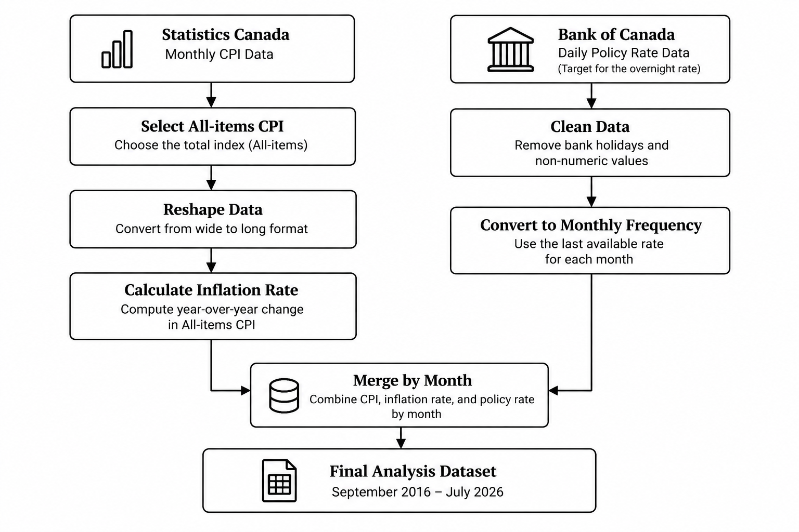
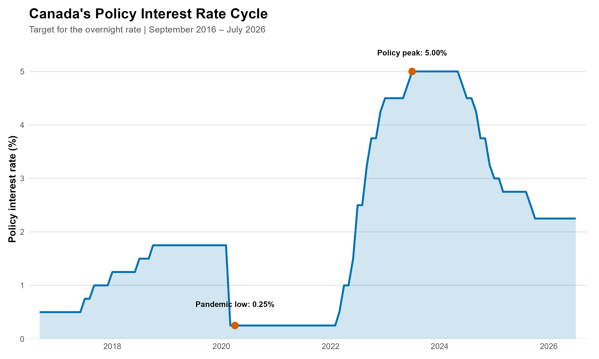
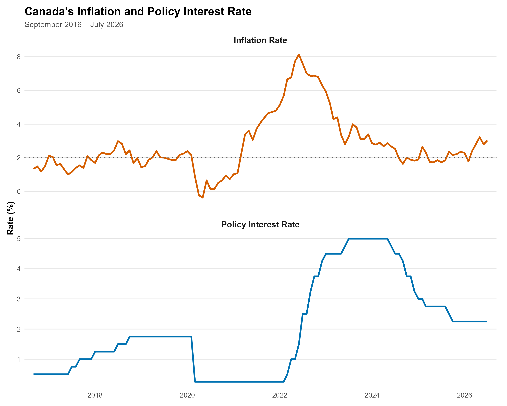
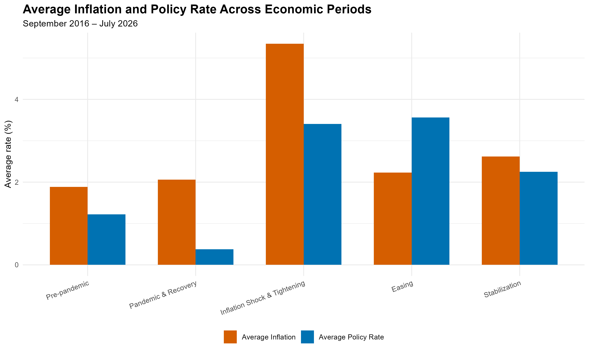

Canada’s Interest Rate Cycle: How Monetary Policy Responded to Rising Inflation
September 2016 – July 2026
1. Introduction
One of the Bank of Canada’s main means of affecting economic conditions and ensuring price stability is by adjusting interest rates. In the last ten years, Canada’s monetary policy went through a number of different phases, starting with a period of slow tightening prior to the COVID-19 pandemic, then moving on to emergency cuts in interest rates in 2020, and afterwards undergoing a vigorous tightening phase during the inflation shock of 2022.
The analysis looks at the changes that took place in Canada’s policy interest rate between September 2016 and July 2026 and at the way these changes correlated with movements in consumer price inflation.
The study looks at the timing and size of the changes in the policy interest rate, the way in which inflation has evolved in relation to the Bank of Canada’s 2% target, and the shift from monetary tightening to monetary easing.
The aim is not to determine a causal link between interest rates and inflation, but rather to look at the timing and patterns in the data and to identify the main stages of the cycle of Canada’s monetary policy.
1.1 Research Question
How did monetary policy respond to rising inflation in Canada between September 2016 and July 2026?
2. Data and Methodology
This analysis combines two key Canadian macroeconomic indicators: consumer price inflation and the Bank of Canada’s policy interest rate.
Consumer Price Index (CPI) Monthly Consumer Price Index data were obtained from Statistics Canada. The analysis uses the All-items CPI series, with observations extending from January 2015 through July 2026.
Policy Interest Rate Daily policy interest rate data were obtained from the Bank of Canada. The analysis uses the target for the overnight rate (V39079), Canada’s key policy interest rate. The original dataset covers September 2016 through August 2026.
Because the inflation data are available monthly through July 2026, the combined analysis covers the common period from September 2016 to July 2026.
Variables
| Variable | Description |
|---|---|
| CPI | Monthly All-items Consumer Price Index |
| Inflation Rate | Year-over-year percentage change in the All-items CPI |
| Policy Rate | Bank of Canada’s target for the overnight rate |
2.1 Data Preparation
The two datasets required different preparation steps before they could be combined. The CPI data were transformed from a wide monthly format into a time-series structure, while the daily policy-rate data were cleaned and converted to monthly frequency.

The resulting dataset contains the monthly All-items CPI, year-over-year inflation rate, and policy interest rate for the common analysis period.
2.2 Analytical Approach
The analysis examines Canada’s monetary policy cycle through several complementary approaches.
First, the policy interest rate is examined over time to identify major periods of monetary tightening and easing.
Second, inflation and the policy rate are compared to examine how the two indicators evolved relative to each other and how inflation moved around the Bank of Canada’s 2% target.
Third, the analysis divides the study period into five broad economic phases:
- Pre-pandemic
- Pandemic & Recovery
- Inflation Shock & Tightening
- Easing
- Stabilization
Average inflation and the average policy rate are calculated for each phase to compare inflationary conditions with the prevailing monetary policy stance.
Finally, key turning points are identified by measuring the inflation peak, the policy-rate peak, and the time between the two. Changes in inflation and the policy rate following their respective peaks are also calculated.
2.3 Scope and Limitations
This analysis is descriptive rather than causal. The comparison of inflation and the policy interest rate identifies patterns, timing, and changes in the two indicators, but it does not establish that changes in the policy rate alone caused subsequent changes in inflation.
Inflation is influenced by multiple economic factors, including supply conditions, energy prices, labour-market conditions, exchange rates, and consumer demand. These factors are outside the scope of this analysis.
3. Results
This section shows the main results of the analysis. It looks at changes in the policy rate, when inflation and policy-rate peaks happened, and how these varied across major economic periods. Tables and figures highlight the key patterns in the data.
3.1 Policy Rate Changes
Throughout the study period the policy rate went through a number of distinct stages. It rose gradually prior to the pandemic, dropped sharply to 0.25% in 2020, and then increased quickly as a result of the inflation shock. After having reached a peak of 5.00% in 2023 the policy rate started to fall.
Table 1. Summary Statistics of Canada’s Policy Interest Rate, September 2016–July 2026
| Metric | Result |
|---|---|
| Starting policy rate | 0.50% |
| Ending policy rate | 2.25% |
| Minimum policy rate | 0.25% |
| Maximum policy rate | 5.00% |
| Average policy rate | 2.02% |
| Total rate changes | 27 |
| Rate increases | 15 |
| Rate decreases | 12 |
| Net change | +1.75 pp |
This table summarizes the overall level and direction of changes in Canada’s policy interest rate during the study period, including the starting and ending rates, the range of rates, and the number of increases and decreases.
Table 2. Major Policy Rate Cycles, September 2016–July 2026
| Policy Cycle | Starting Rate | Ending Rate | Change |
|---|---|---|---|
| 2017–2018 Tightening | 0.50% | 1.75% | +1.25 pp |
| 2020 Pandemic Easing | 1.75% | 0.25% | −1.50 pp |
| 2022–2023 Tightening | 0.25% | 5.00% | +4.75 pp |
| 2024–2025 Easing | 5.00% | 2.25% | −2.75 pp |
This table highlights the major tightening and easing phases of Canada’s monetary policy cycle and shows the change in the policy rate within each phase.
Figure 1. Canada’s Policy Interest Rate, September 2016–July 2026

3.2 Inflation and Policy Rate Peaks.
During this period, inflation and the policy rate hit their highest levels at different times. Inflation peaked first, and the policy rate reached its peak afterward.
Table 3. Inflation and Policy Rate Turning Points, September 2016–July 2026
| Indicator | Peak Rate | Date |
|---|---|---|
| Inflation Rate | 8.13% | June 2022 |
| Policy Interest Rate | 5.00% | July 2023 |
This table identifies the highest observed inflation rate and the highest policy interest rate during the study period and shows the timing of each peak.The policy interest rate reached its peak approximately 13 months after Inflation reached its peak.

3.3 Changes Following the Peaks.
After inflation and the policy rate reached their peaks, how much did each decline by July 2026?
Table 4. Changes in Inflation and Policy Rate Following Their Peaks
| Indicator | Peak | July 2026 | Change |
|---|---|---|---|
| Inflation Rate | 8.13% | 3.03% | −5.10 pp |
| Policy Interest Rate | 5.00% | 2.25% | −2.75 pp |
This table compares the peak levels of inflation and the policy interest rate with their respective levels in July 2026. Inflation fell by 5.10 percentage points, from 8.13% in June 2022 to 3.03% in July 2026. Over the same period, the policy interest rate declined by 2.75 percentage points, from its peak of 5.00% to 2.25% in July 2026.
3.4 Economic Period Comparison
The analysis period was divided into five broad economic phases to compare inflation and monetary policy conditions across different periods. Table 5 presents the average inflation rate and average policy interest rate for each phase.
Table 5. Average Inflation and Policy Rate Across Economic Periods
| Economic Period | Average Inflation | Average Policy Rate |
|---|---|---|
| Pre-pandemic | 1.88% | 1.22% |
| Pandemic & Recovery | 2.06% | 0.38% |
| Inflation Shock & Tightening | 5.35% | 3.41% |
| Easing | 2.23% | 3.56% |
| Stabilization | 2.62% | 2.25% |
This table compares the average inflation rate with the average policy interest rate across five broad economic phases, highlighting how monetary policy conditions differed across the study period.
Figure 3. Average Inflation and Policy Rate Across Economic Periods

4. Findings
The results show a clear shift in Canada’s monetary policy over the study period. The policy rate moved from gradual tightening before the pandemic to a sharp reduction in 2020, followed by an aggressive tightening cycle as inflation increased. The rate reached 5.00% in 2023 before easing to 2.25% by July 2026.
Inflation also followed a distinct pattern. It rose sharply during 2021–2022 and reached a peak of 8.13% in June 2022. The policy rate reached its peak of 5.00% in July 2023, creating a 13-month difference between the two peaks. This suggests that inflation and monetary policy did not move at exactly the same time, which is consistent with the delayed effects often associated with monetary policy. However, the analysis is descriptive and does not establish a causal relationship.
Following the peaks, both inflation and the policy rate declined. By July 2026, inflation had fallen to 3.03%, while the policy rate had declined to 2.25%. Inflation therefore fell by 5.10 percentage points from its peak, compared with a 2.75 percentage-point decline in the policy rate.
Across the five economic periods, the results also show how monetary conditions changed over time. Inflation was highest during the Inflation Shock & Tightening period, while the policy rate remained elevated during the Easing period. This reflects the fact that the policy rate can remain restrictive even after inflation begins to fall.
5. Conclusion
This analysis examined how Canada’s monetary policy changed as inflation moved through different stages between September 2016 and July 2026. The results show that the policy rate moved from very low levels during the pandemic to a peak of 5.00% as inflation increased, before gradually declining as inflation eased.
Inflation reached its peak before the policy rate, with a 13-month difference between the two peaks. While this timing is consistent with a delayed monetary policy response, the analysis is descriptive and cannot establish a causal relationship. Overall, the results show a clear shift from accommodative monetary policy during the pandemic to strong tightening during the inflation shock, followed by a period of easing.
References
Bank of Canada. (2026). Canadian interest rates and monetary policy variables: 10-year lookup. https://www.bankofcanada.ca/rates/interest-rates/canadian-interest-rates/
Statistics Canada. (2026). Consumer Price Index, monthly, not seasonally adjusted (Table 18-10-0004-01). https://www150.statcan.gc.ca/t1/tbl1/en/tv.action?pid=1810000401